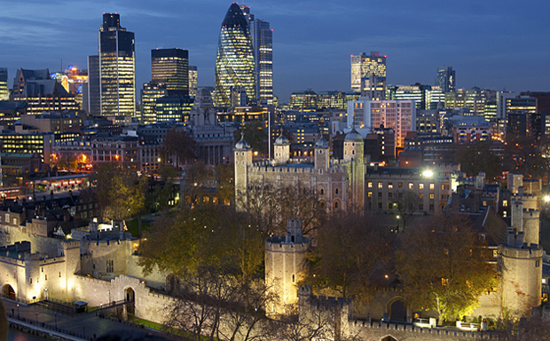

1. Tower of London

La première place va à la Tour de Londres, l'un des plus célèbres forteresses et la maison des Joyaux de la Couronne d'une valeur inestimable. Construite, il y a près de 1000 ans comme une résidence royale et prison, des histoires fascinantes sont abrités dans ses murs.
Les visiteurs peuvent aujourd'hui faire une visite guidée des célèbres"Beefeaters", assister à la cérémonie de la remise des clés, qui a lieu tous les jours , et en apprendre davantage sur les plus insolites ex-habitants de la Tour - y compris un ours polaire .